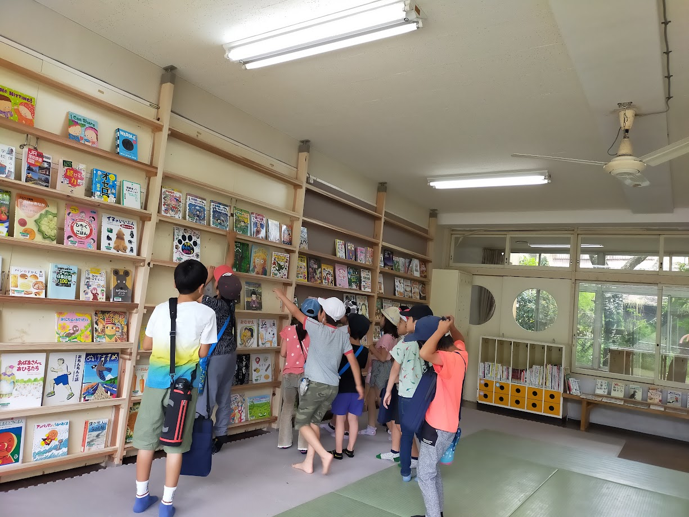
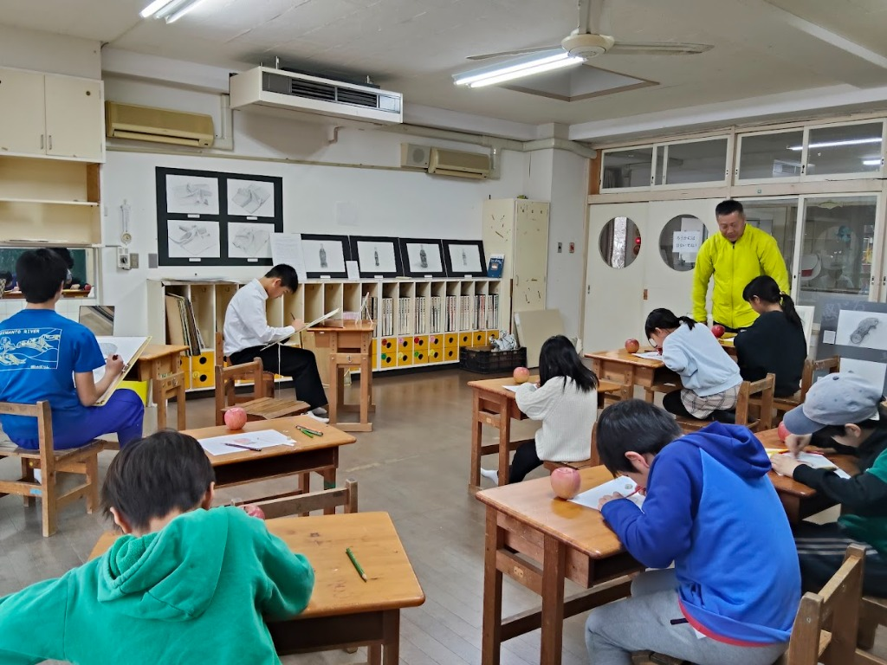
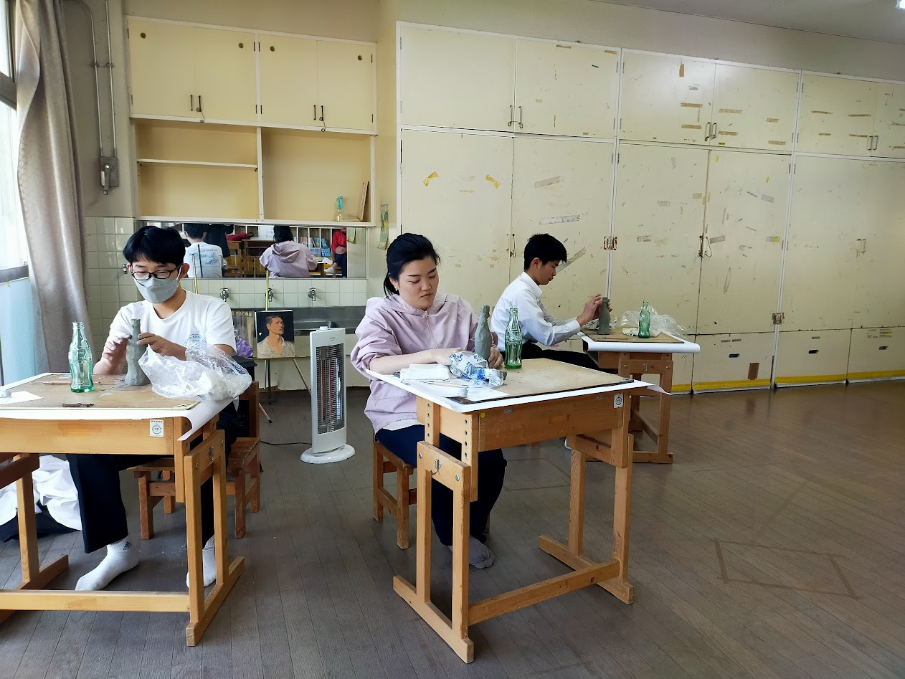

選択肢が少なくても、学びたい気持ちはある
地域には習い事が少なく、中学校に文化部もありません。美術部は、その声に応える活動として生まれました。
二か月の会のみなさまへ
十和の子どもから大人までが、安心して芸術に向き合える場所をつくるため、移動式クーラー一式のご支援をお願い申し上げます。
育つ会とおわは、住民が主体となって「遊び、学び、育ち合う」環境と場をつくる任意団体です。図書、公園、交流、美術。地域に足りないものを嘆くだけではなく、小さく始め、育て、次世代へつないできました。
十和地域では、文化や学びに触れる選択肢が限られています。2022年から旧小鳩保育所を活用し、行政と協働して図書機能・公園機能を備えた居場所づくりを開始。活動は4年目に委託事業となり、地域に必要とされる公共の場へと育っています。

「図書館も、美術館も、公園もない」という課題から始まり、地域の人が自由に過ごし、学び、相談し、挑戦できる場所へ。育つ会とおわが積み重ねてきた活動を、詳しくご紹介します。
旧小鳩保育所を活用した活動は、単なる図書の貸出場所ではありません。子どもや保護者の居場所、文化活動の入口、情報へのアクセス、住民の企画を支える場として、地域の中で役割を広げています。
もともと図書館や本屋がない十和地域で、住民が気軽に本や情報へ触れられる環境を提供しています。図書環境が整うことで、地域住民の図書サービスへの認識と利用が高まりました。
自由に過ごせる場所の選択肢が極端に少ない地域で、時間・空間・仲間という「三間」を提供しています。おもちゃ、絵本、クッションなどを備え、親子が気負わず過ごせる環境を整えています。
人が集まることで、新しい企画や活動が生まれています。単なる図書サービスを超え、地域住民の体験、学び、表現、交流を支える文化拠点として機能しています。
四万十町認定のスマホサポーターによる相談対応や、行政との月例会を実施。地域課題を確認しながらサービスを改善する、実証実験の場としても役割を果たしています。
3年間のボランティア活動を経て、2025年度から町の委託事業となりました。開館日や図書・情報サービスが拡大し、仕事終わりや平日にも利用しやすい場所へ進化しています。
現在、十和地域では四万十町立十和図書館分館の整備が検討されています。育つ会とおわは、住民・行政と育んできた「小さな新しい公共」の実績と経験を、十和ならではの分館づくりへつなげたいと考えています。
住民が主体的に地域へ関わり、「遊び、学び、育ち合う」豊かな社会へ。誰もが「自分にはできる」と感じられる、可能性に満ちた場所を目指します。
「ここがなかったら、子育てどうなっていたかなと思うことがあります」利用者の声
「みんなで集まって勉強できる場所が他にない」中学生の声
「疲れている時に行ってもよくて、何時間いてもいいところ」利用者の声
2023年6月、子どもの声をきっかけに旧小鳩美術部が始まりました。美術大学出身の講師を招き、小学生から社会人までが同じ場所で、観察し、考え、表現しています。
地域には習い事が少なく、中学校に文化部もありません。美術部は、その声に応える活動として生まれました。
参加者は増加傾向にありますが、予算や体制の制約から、これ以上の希望者を受け入れにくい状況です。
町主催のアンデパンダン展への出展、高知新聞への掲載など、表現が社会とつながる経験を重ねています。



キリン福祉財団の助成採択を受け、より多くの方が訪れやすい場所で、文化・芸術活動の可能性を検証します。
空き家相談、スマホ相談、パン販売、地域掲示板、休憩などに使われ、地域との接点が少しずつ生まれている場所です。ここに美術活動を加え、世代を越えて立ち寄れる文化の入口へ育てます。
会場となる空き家は古い建物で、冷房設備がありません。高知の厳しい夏の中で、子どもから大人までが長時間制作するには、安全な室温を保つ環境が不可欠です。
夏場に室内が高温になると、熱中症の危険だけでなく、集中して作品に向き合うことも難しくなります。
ポータブルクーラーなら大規模な工事をせずに設置でき、必要に応じて別の活動場所でも活用できます。
二か月の会のみなさまに、アイリスオーヤマ製ポータブルクーラーと設置用専用パネル一式の購入をご支援いただきたく、お願い申し上げます。
地域の小さな公共を、ともに育てる
美術活動は、絵を上手に描くためだけのものではありません。ものをよく見ること、自分の感じたことを表すこと、世代の違う誰かと同じ時間を過ごすこと。その一つひとつが、地域の豊かさにつながると私たちは考えています。
お問い合わせ：sodatsukai@gmail.com